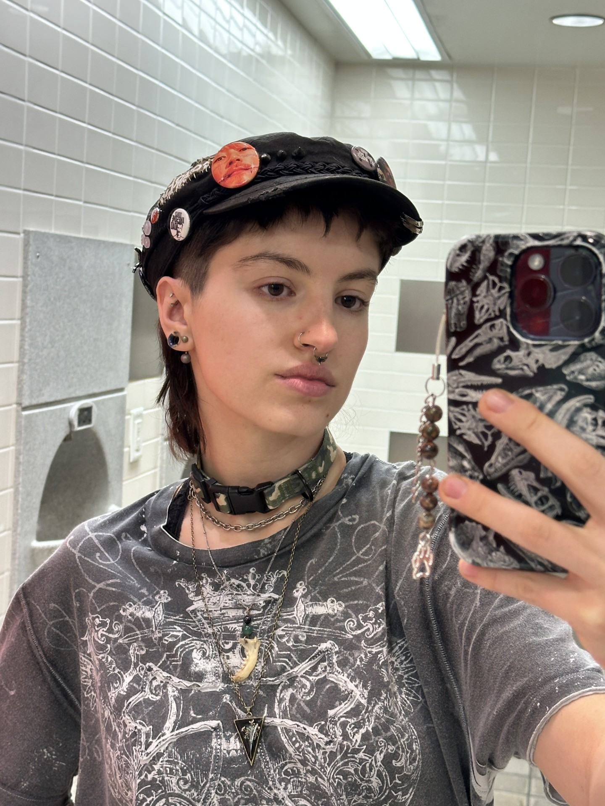

Ren Barklow
3D Artist, Modeler + Animator
About Me
Hey! I'm Ren Barklow, a 3D Game Artist specializing in 3D Modeling and Animation.
I am currently an undergrad student at the University of Utah. I am pursueing a Bachelor's of
Science degree in Games with a minor in Gender Studies, expecting to graduate May 2027.
I knew I wanted to be a game artist since taking an Intro to 3D Animation class in high school and watching development videos of my favorite game at the time, The Isle. I quickly realizied I have an aptitude for the art and a passion that could drive me for a lifetime. I have 5+ years experience in Maya and have used many other softwares for various projects including, but not limited to: Substance Painter, Photoshop, Blender, Unreal Engine, Unity, ZBrush, etc.
In addition to making games, I also love playing them, digitally painting, critically analyzing games, narrative, film, and other media, and hanging out with my cat.
I knew I wanted to be a game artist since taking an Intro to 3D Animation class in high school and watching development videos of my favorite game at the time, The Isle. I quickly realizied I have an aptitude for the art and a passion that could drive me for a lifetime. I have 5+ years experience in Maya and have used many other softwares for various projects including, but not limited to: Substance Painter, Photoshop, Blender, Unreal Engine, Unity, ZBrush, etc.
In addition to making games, I also love playing them, digitally painting, critically analyzing games, narrative, film, and other media, and hanging out with my cat.

